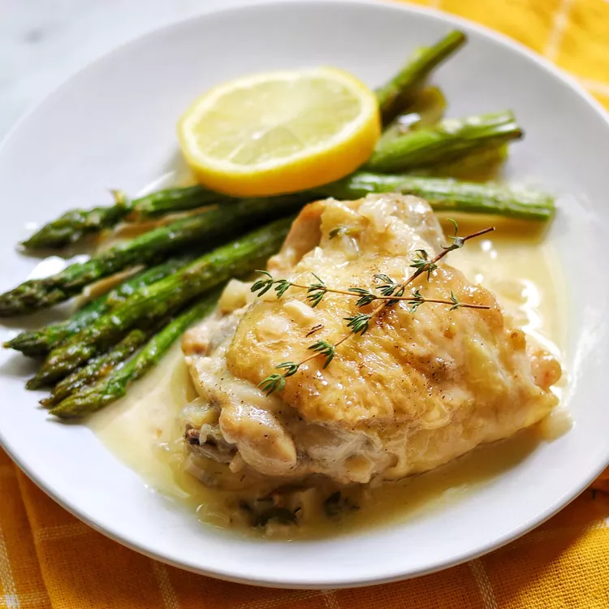

Home
Lemon Garlic Chicken

Description
Few pairings have the delightfully bright and savory quality of lemon and garlic.
The warmth of pungent garlic combined with the zesty presence of lemon is a
match made in heaven — especially when it comes to chicken. Take your pick from
chicken thighs tossed with thyme sprigs and shallots or Cheddar-stuffed breasts
topped with seasoned breadcrumbs. We've gathered our best lemon garlic chicken
recipes that showcase how these simple ingredients can create magic in your kitchen.
Ingredients
- 2 tablespoons vegetable oil
- 4 bone-in, skin-on chicken thighs
- salt and paper to taste
- 1/2 medium onion, thinly sliced
- 4 garlic cloves, minced
- 1/2 cup dry white wine
- 1 cup chicken broth
- 3 tablespoons fresh lemon juice
- 2 tablespoons butter or margerine
- 1/2 cup heavy cream
- 1/2 teaspoon thyme leaves
- 1/8 teaspoon salt
Steps
-
Turn on a multi-functional pressure cooker (such as Instant Pot®)
and select Saute function. Heat vegetable oil.
-
Season chicken thighs with salt and pepper on both sides; add to
Instant Pot®. Cook one side at a time until both sides of the
chicken are a golden brown, 3 to 4 minutes per side. Remove
chicken from the pot and set aside.
-
Add onion and sauté for 1 minute. Add garlic and cook for 1 more minute.
Pour in white wine and stir to scrape brown bits from the bottom of the
pot. Stir in chicken broth and lemon juice; bring to a boil and cook
until broth has reduced slightly, 2 to 3 minutes. Turn off the Sauté function.
-
Return chicken Instant Pot®. Close and lock the lid. Select High pressure
according to manufacturer's instructions; set timer for 10 minutes. Allow
10 to 15 minutes for pressure to build.
-
Release pressure using the natural-release method according to manufacturer's
instructions, for 10 minutes. Release remaining pressure carefully using the
quick-release method, about 5 minutes. Unlock and remove the lid.
-
Remove chicken from the pot and set aside. Select the Sauté mode and bring
sauce to a boil. Whisk in butter or margarine, heavy cream, salt, and thyme.
Cook until sauce has thickened slightly, 2 to 3 minutes. Serve chicken
drizzled with the sauce.